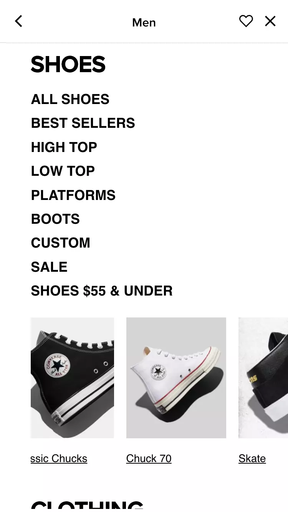

Hick's Law
Converse
Converse.com The Converse website makes use of the Hick's Law by helping users to filter in what they like and filter out what they do not according to their needs and wants thus increasing their decision-making on the things they really like and want.
Fitt's Law
Wix
Wix.comThe Wix website makes use of the Fitt's Law by making their most importan buttons easily seen and accessible. As I navigate through the site, I know where I need to press to get started to use their product and services.
Law of Closure
Wix
Adidas.comThe Adidas website make use of the Occam's Razor by simplicifying content in the viewport throughout the website; also the choice of typography with lots of space enhances this effect as well.